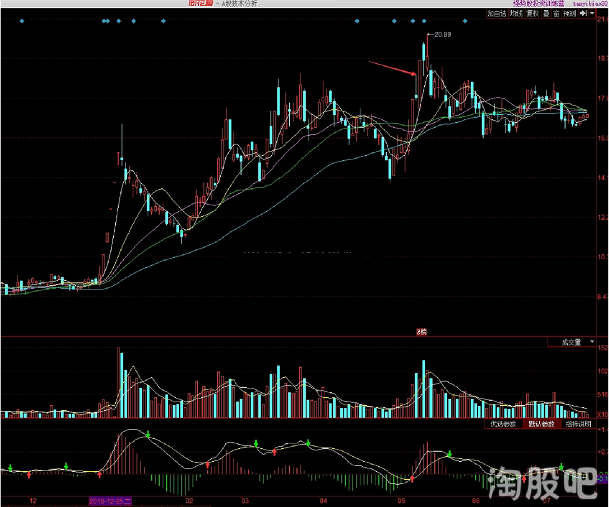
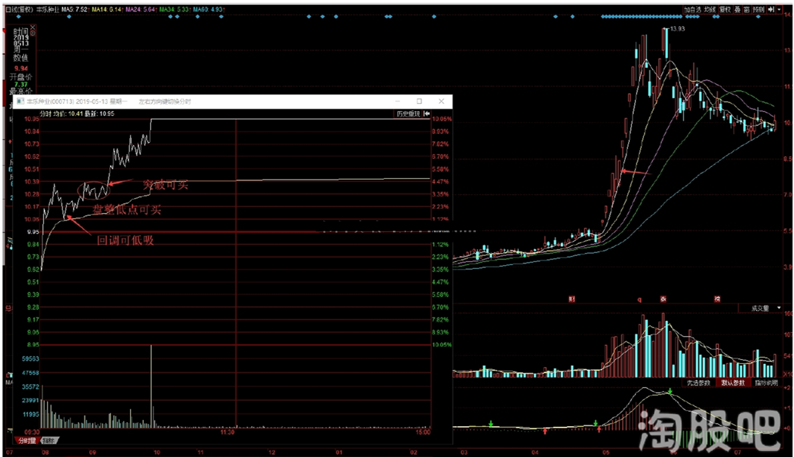
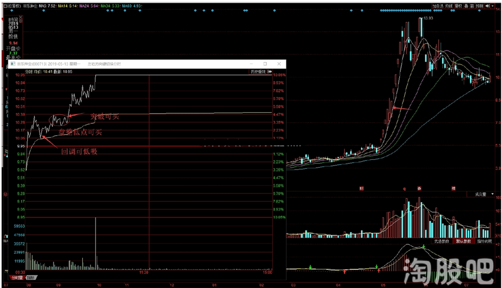

上影线战法是半路摸式极具爆发力，应用最广泛，也是易涨停的一种形态，本篇将详细介绍上影线战法介入方式的核心细节，不同位置的上影线形态，在分时介入条件上的区别，以及分时走势强度的要求，什么样的分时异动才符合我们关注的要求，盘中分时买点等都将详细说明，希望阅读本篇朋友们对于上影线战法的应用会有一个质的提升与共鸣！
上影线战法是对于上影线模式形态的统称，其中包含上影线平台、热点龙头涨停加一阳上影线、强势股回调阴线上影线、 第二波企稳上影线，阳贴阴上影线等，这些不同位置的上影线都是上影线战法关注的有效形态，而因为上影线位置不同在分时买点上会有很大的区别，下面先来看分时异动时我介入的条件！ 这幅图是我半路分时操作的核心，仅供参考，非操作指导，也希望大家不要广泛传播！
 盘中分时走势异动
盘中分时走势异动
上图是盘中分时走势异动后会出现的几种情形，分时异动关注的标准是一波或者两波拉升涨幅达到3%以上(这里一波两波拉升流畅度和幅度是关注的关键因素），最好不超过6%，第二波的波形不要比第一波长太多！
图中1图绿盘异动直追型、2图绿盘异动盘整型、3图绿盘异动后回调下穿均价线再上均价线型、4图高开异动盘整型、5图高开异动后回调下穿均价线再上均价线型，图中3和5中的低吸买点有需要回调过程走势比较平滑，不能看上去很凌乱，同时回调幅度不能进入水下太深，一般最多调整到水下一个点之内！
半路模式的分时异动买点走势类型基本涵盖在以上5种走势之中，符合这五种走―是我常用的半路介入的类型！
下面我以不同位置的上影形态来详细阐述其在上述5种分时走势中的买点问题！
1、上影线平台：
1)完美上影线平台，形态上试探充足，没有上轨压制，股性活跃
分时突破上影线这一类完美平台上影线只要出现一波两波拉升幅度3%以上，只要符合分时图中1到5中的任意一种我都会考虑关注，两波拉升后稍微回调再突破我会追，也就是分时图1 ，同时分时图中2和4中的盘整期我也会关注，也可再突破追，分时图中3和5可回调低点低吸，我也会在上均价线后盘整或者突破再买！
2) 一般的平台股，我会按分时图中2、 3、 4、 5中的买点去买，但3和5中分时下跌我不会低吸，只再上均价线盘整突破买！
2、热点龙头涨停加一阳上影线、强势股回调阴线上影线、第二波企稳上影线，这三种形态都是围绕市场热点，强势股做 （一般是市场龙头或板块中军非后排跟风），他们的分时买点我会按照2、 3、 4、 5中的买点操作。但3和5中的低吸买点我只在连板氛围或者赚钱氛围比较好的时期执行！ 龙头人气标的，板块中军符合上影线模式的，分时从绿盘开始拉升，我会按1的买点追，但需要结合强势股的整体氛围。
 龙头股涨停突破
龙头股突破
龙头股涨停突破
龙头股突破
 龙头股买点
龙头股买点
3、 阳贴阴上影线，买点以2、 3、 4、 5中的买点为主，但3、 5中的低吸买点需在氛围好的时期且板的属于人气标的才执行。
4、 一般的上影线个股，我只按2、 5两种分时买点操作！
上影线的形态以及位置在公开贴有非常详细的介绍，大伙如果对上影线形态有疑问的可以去看公开贴，也可以在观点留言，我尽量回复大家的疑问，这里就不再详细阐述了 ，本文着重介绍了分时走势强度以及买点的问题，对于盘中无从下手，不知道在什么位置去买的朋友，一些经验上的共勉，仅供参考。
大家有任何疑问都可留言，定当竭尽全力为大家解惑！


{kind=link}
{kind=link}